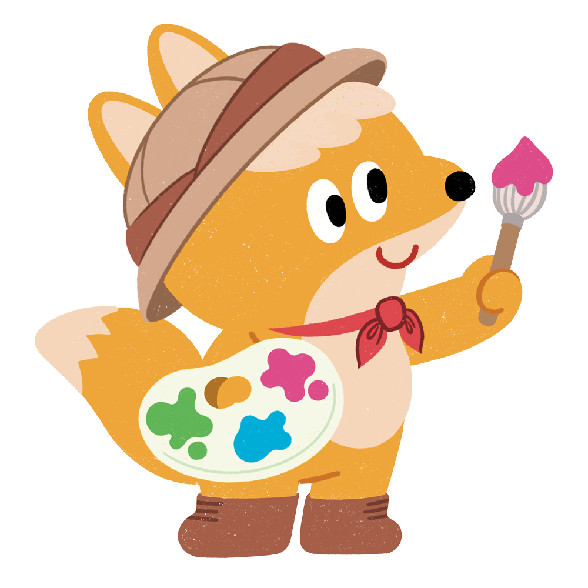
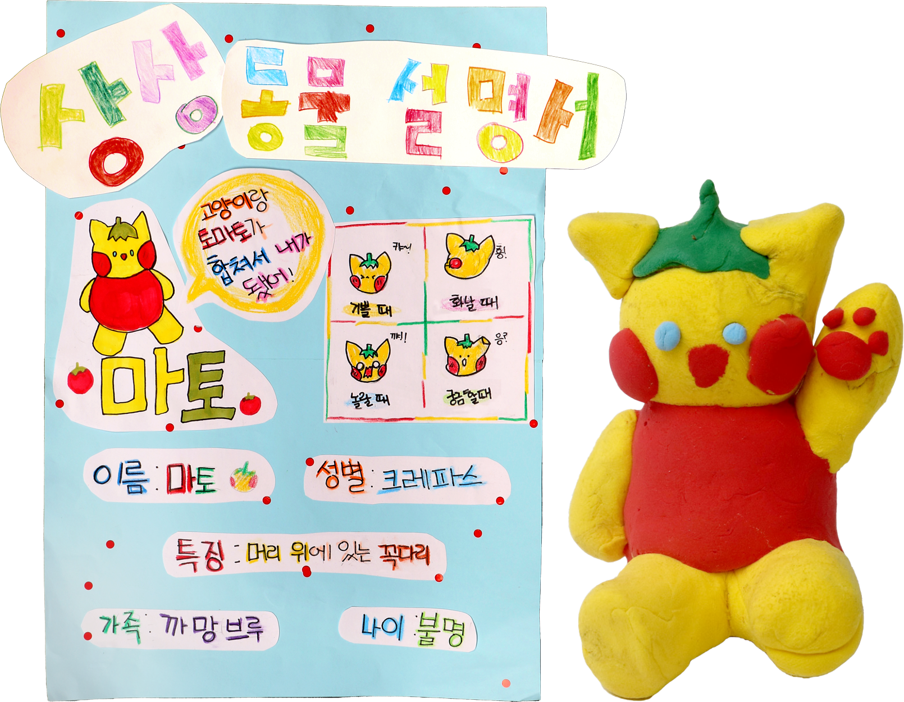
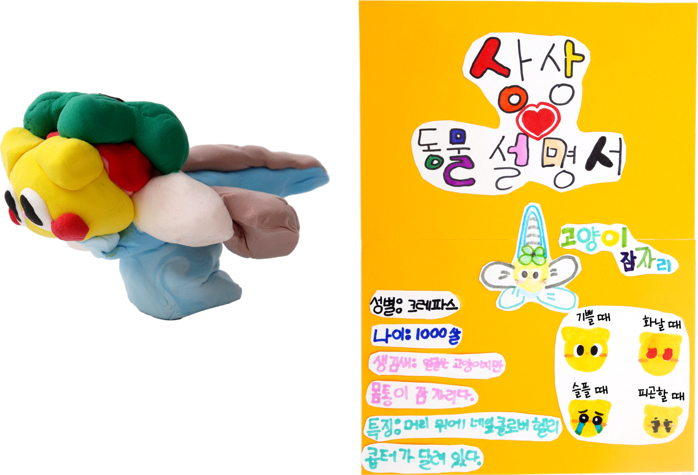

활동하기2 상상 동물 입체 작품을 만들어 봅시다.

‘상상 동물 입체 작품 만들기’ 활동 방법
① 상상 동물의 밑그림을 그립니다.
② 색점토를 이용해 상상 동물을 입체로 만듭니다.
③ 상상 동물의 특징을 담은 상상 동물 설명서를 만듭니다.
정답

정서윤(학생 작품) 「마토」 (색점토/4×4×9 cm)
화가 나면 얼굴이 빨개지는 ‘마토’ 냐옹!
정답

김가윤(학생 작품) 「고양이 잠자리」 (색점토/9×12×7 cm)
나는 고양이 얼굴에 잠자리의 몸통을 가진 ‘고양이 잠자리’야!
정답